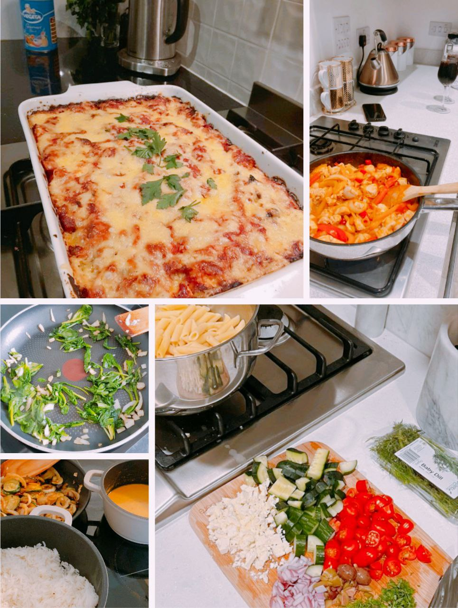

Food is a universal pleasure, and our individual preferences create a beautiful tapestry of culinary experiences. Here, all tastes are welcome! With a passion for personalizing classic recipes and using what you have on hand, I'm excited to share some of the creations we've come up with on this website. These recipes are a culmination of inspiration from online finds and our collaborative efforts in the kitchen, adding our own unique twist for a touch of personal flavor. Feel free to experiment, substitute ingredients, and make them your own – we hope you enjoy the satisfaction of creating delicious meals, no matter what your pantry holds!
